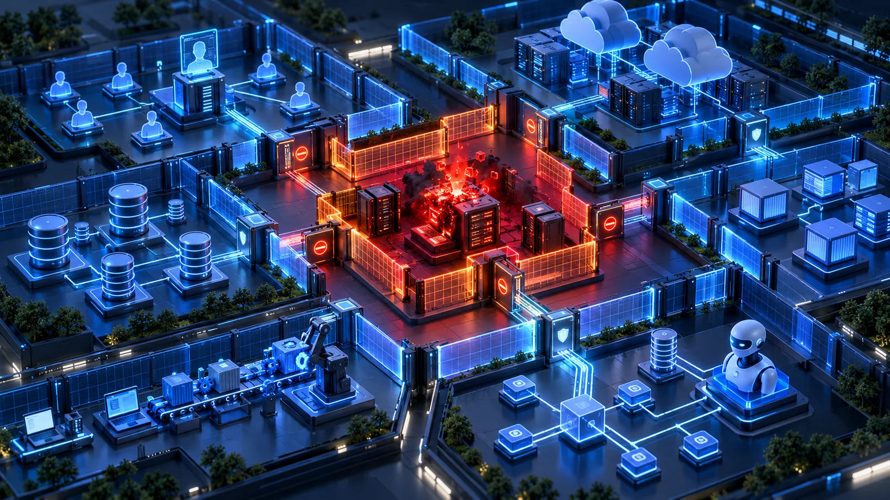

The Strongest Architecture Is The One That Limits Blast Radius
The quality of security architecture is revealed after the first control fails. Least privilege, segmentation, constrained trust and resilient control planes keep an individual compromise from becoming an enterprise-wide incident.

Security architecture is often judged by how well it prevents compromise. That matters, but prevention is only part of the job.
A stronger question is: What happens after the first thing goes wrong?
A user account is compromised. An endpoint is infected. An API key leaks. A trusted vendor is breached. An AI agent receives the wrong permission. A software update carries malicious code. At that point, the quality of the architecture is no longer measured by whether the first control failed. It is measured by how far the failure can travel.
That is blast radius.
Prevention Is Important. Containment Is Architectural.
Many security programmes still behave as though the objective is to stop every attack at the perimeter. That is unrealistic. Controls fail, credentials are stolen, vulnerabilities appear, users make mistakes and trusted third parties become compromised.
As discussed in Good Security Architecture Assumes Every Control Will Eventually Fail, the stronger architecture is not the one that assumes every control will work perfectly. It is the one that prevents a single failure from becoming a business-wide event.
If one compromised endpoint can reach every server, the blast radius is large. If one stolen administrator credential provides access across multiple platforms, the blast radius is large. If one SaaS integration can read every business dataset, the blast radius is large.
The original compromise may be small. The architecture determines whether it stays small.
Every Trust Relationship Expands The Blast Radius
In Every Trust Relationship Is An Attack Path, I discussed how architecture diagrams should be read not simply as connectivity maps, but as maps of trust.
That leads naturally to another question: How much of the environment becomes reachable when one of those trust relationships is compromised?
A connection between two systems may be necessary. But if System A has broad access to System B, and System B has unrestricted access to System C, the attacker may inherit a much larger path than the original business requirement intended.
This is why trust should not only be explicit. It should also be constrained. The fewer systems that depend on one identity, credential, network segment or control plane, the smaller the potential blast radius.
Identity Can Create Enormous Blast Radius
Identity is one of the clearest examples.
In The New Security Perimeter Is No Longer The Network. It Is Identity., I argued that modern access increasingly depends on identity and permission rather than physical network location.
That makes overprivileged identities particularly dangerous.
A compromised employee account with access to one application is one problem. A compromised privileged account that can administer cloud infrastructure, reset identities and access security tooling is another. The credential may be the same size, but the blast radius is completely different.
Least privilege is therefore not simply an access-control principle. It is a blast-radius control. The less authority one identity carries, the less an attacker inherits when that identity is compromised.
Segmentation Is About More Than Networks
Blast-radius reduction is often associated with network segmentation. That is still important, but modern segmentation needs to go further.
Identity should be segmented. Administrative roles should be separated. Cloud accounts and subscriptions should have clear boundaries. Applications should have narrowly scoped data access. API permissions should be limited. Production should be isolated from development.
The same principle applies to AI agents. They should only reach the tools required for their task.
The principle is simple: do not allow one compromise to inherit unnecessary trust.
This is why security architecture should think in terms of security domains rather than simply systems. Two systems may technically be able to communicate, but that does not mean they should share the same administrative boundary, credentials or privileges.
The Same Principle Applies To AI
AI makes blast-radius thinking even more important because agents can increasingly take action.
An AI assistant that can search documents has one level of potential impact. An AI agent connected to multiple MCP servers, cloud APIs, repositories and business applications has another.
The architecture around that agent should therefore determine not only what it can do, but how far an error or compromise can propagate.
This is closely related to the control-point approach discussed in The AI Gateway Should Govern Trust, Tokens And Tools. If an AI agent calls the wrong tool, can the action be blocked? If one MCP server is compromised, can it influence other systems? If an agent credential leaks, how many applications become reachable?
AI autonomy should not automatically mean enterprise-wide authority. The agent may be intelligent, but its blast radius should still be intentionally small.
Software Supply Chains Have Blast Radius Too
Software trust creates another example.
In The Certificate Was Valid. The Software Update Was Malicious., the key lesson was that legitimate trust mechanisms can still distribute harmful outcomes when the software supply chain is compromised.
The architectural issue is scale.
Compromise one endpoint and perhaps one endpoint is affected. Compromise a trusted software-update mechanism and potentially thousands of endpoints inherit the same compromise.
The trust relationship amplifies the blast radius.
This is why build pipelines, signing infrastructure and update channels should be treated as high-value systems with stronger isolation and independent controls. The more systems that trust something, the more carefully that thing must be protected.
Concentration Creates Hidden Risk
Centralisation can make architecture easier to manage.
A single identity provider, a single AI Gateway, a central secrets platform or one security-management plane can improve consistency and governance. But they also create concentration risk.
If everything depends on one service, the compromise or failure of that service may affect everything downstream.
That does not mean centralisation is wrong. It means the architecture needs to recognise the dependency and design around it with administrative separation, independent recovery paths, limited privileges and resilient control planes.
Convenience should never hide concentration risk.
Security Architecture Should Ask “How Far?”
During architecture reviews, we often ask whether controls exist.
Is MFA enabled? Is encryption implemented? Is segmentation present? Are logs collected?
Those questions are necessary, but they should be followed by another:
If this control fails, how far can the attacker go?
That question changes the conversation.
A database may be encrypted, but how many applications can query it? MFA may protect administrators, but what can one administrator account control? A firewall may segment networks, but can a shared privileged identity cross all of them? An API may require authentication, but does one token provide access to every function?
This is where security architecture moves beyond control compliance and starts protecting business outcomes.
As discussed in Security Architecture Protects The Business; Security Controls Protect The Technology, individual controls can work exactly as intended while the wider architecture still exposes the business.
Final Thoughts
The strongest architecture is not necessarily the one with the most controls. It is the one where individual failures remain individual failures.
One compromised user should not compromise the organisation. One vulnerable application should not expose every database. One stolen API key should not unlock an entire cloud environment. One compromised vendor should not automatically become a path to every critical system. One AI agent should not have authority across the enterprise.
Security architecture cannot guarantee that nothing will ever fail.
It can decide how much damage that failure is allowed to cause.
That is why prevention matters, but containment matters just as much.
The strongest architecture is the one that limits blast radius.
Question assumptions. Share knowledge. Build trust.
Share this article
If this perspective was useful, share it with your network.